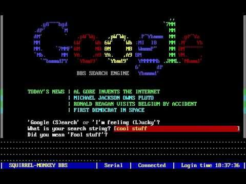
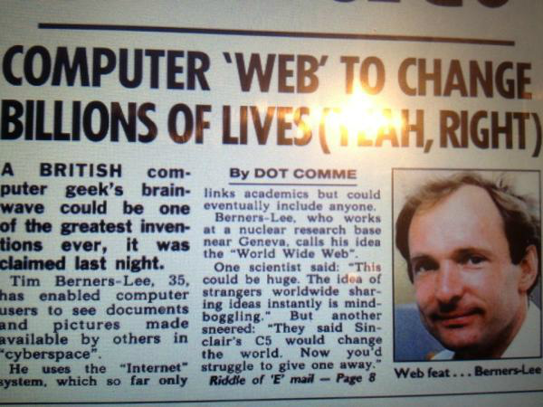

Sir Time Berners-lee is the reason you're able to use the web as it is today
In building the first web browser at Switzerland's CREN unclear research lab in the early 90s, the English-born Berners-lee designed as system where only the technicans behind the scenes would see adresses. The ordinary web user would only see text and hypertext, jumping from page to page without ever typing on a keyboard.
On the initial design of the web, you didnt see the http:// when you were a user. You just read text and you clicked on links, Berners-Lee says. In the original web browser, you had to bring up a special link inspector to see addresses. Thats why I wasnt worried about http:// being ugly. No one would really see it.
As the web grew, this particular vision was lost at least in part. But youd have to say that the web still exceeded expectations. In 2010, according to the International Telecommunication Union, close to a third of the worlds population was using the web, and after beginning life as a means of merely sharing text, it has evolved into a medium that shares everything from audio to video to entire software applications that in many ways dwarf what you can do on a local machine.
Cerf and Crocker are just two names on a long list of internet founding fathers. The world cant evenagree on when the internet was created. But the web originated with one man. In March 1989, Tim Berners-Lee submitted a proposal to his boss at CERN for a new kind of information management system. His boss called it vague but interesting, and over the next few years, with additional help from a man named Robert Cailliau and other CERN researchers, the proposal spawned the Hypertext Transfer Protocol, HTTP, the basis for the world wide web.
Basically, Berners-Lee took the idea of hypertext and applied it to the transfer control protocol (TCP) and domain naming system (DNS) that already underpinned the internet. At that point, in the late 80s, the hypertext idea was a common one. As Berners-Lee points out, it was already part of CD-ROM interfaces and other technologies. I just had to take the hypertext idea and connect it to the TCP and DNS ideas and ta-da! the World Wide Web, he once wrote.